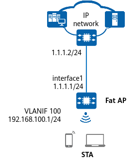

Example for Configuring STA Access to a WLAN (Fat AP)
Networking Requirements
As shown in Figure 1, an enterprise provides the WLAN service for users. The device functions as a Fat AP, serves as a DHCP server to allocate IP addresses to STAs, and provides wireless network access service using NAT.

In this example, interface1 represents MultiGE0/0/0, for which NAT is configured, and the public IP address is set to 1.1.1.1/24, and the IP address of the peer carrier device is set to 1.1.1.2/24.

Table 1 provides an example of data planning.
Item |
Data |
|---|---|
Service VLAN for STAs |
VLAN 100 |
DHCP server |
The Fat AP functions as a DHCP server to assign IP addresses to STAs. |
IP address pool for STAs |
VLANIF 100: 192.168.100.2–192.168.100.254/24 |
AP management information |
|
Regulatory domain profile |
|
SSID profile |
|
Security profile |
|
VAP profile |
|
Precautions
On a Fat AP, the CAPWAP source interface of the WAC is preset to VLANIF 4094, and the management VLAN of the built-in AP is VLAN 4094. In this case, VLAN 4094 cannot be used as a service VLAN. Therefore, to use VLAN 4094 as the service VLAN for STAs, change the management VLAN to another VLAN.
Configuration Roadmap
- Configure the address and TCP-MSS for the WAN-side interface on the Fat AP, and deploy source NAT to translate private IP addresses into public IP addresses for Internet access.
- Configure the LAN-side DHCP server of the Fat AP to assign IP addresses to STAs, and configure a default route to ensure that there are reachable routes between STAs connected to the Fat AP and the Internet.
- Configure basic WLAN functions so that STAs can access the WLAN.
Procedure
- On the Fat AP, configure the address and TCP-MSS for the WAN-side interface, and deploy source NAT to implement network connectivity.
# Configure the IP address, TCP-MSS, and NAT for MultiGE0/0/0 on the Fat AP.
<HUAWEI> system-view [HUAWEI] sysname FAT AP [FAT AP] interface MultiGE0/0/0 [FAT AP-MultiGE0/0/0] ip address 1.1.1.1 24 [FAT AP-MultiGE0/0/0] tcp adjust-mss 1200 [FAT AP-MultiGE0/0/0] nat enable [FAT AP-MultiGE0/0/0] quit
# Configure a source NAT policy in Easy IP mode.
[FAT AP] nat-policy [FAT AP-policy-nat] rule name policy_nat1 [FAT AP-policy-nat-rule-policy_nat1] source-address any [FAT AP-policy-nat-rule-policy_nat1] action source-nat easy-ip [FAT AP-policy-nat-rule-policy_nat1] quit [FAT AP-policy-nat] quit
- Configure the LAN-side DHCP server of the Fat AP to assign IP addresses to STAs, and configure a default route to ensure that there are reachable routes between STAs connected to the Fat AP and the Internet.# Add VGE0/0/0 on the Fat AP to VLAN 100 in tagged mode.
[FAT AP] vlan batch 100 [FAT AP] interface VGE 0/0/0 [FAT AP-VGE0/0/0] port hybrid tagged vlan 100 [FAT AP-VGE0/0/0] quit
# On the Fat AP, configure VLANIF 100 to assign IP addresses to STAs and configure a default route with the next hop being the IP address of the carrier device. Configure a DNS server address as required. The common methods are as follows:- In an interface address pool scenario, run the dhcp server dns-list ip-address &<1-8> command in the VLANIF interface view.
- In a global address pool scenario, run the dns-list ip-address &<1-8> command in the IP address pool view.
[FAT AP] dhcp enable [FAT AP] interface vlanif 100 [FAT AP-Vlanif100] ip address 192.168.100.1 24 [FAT AP-Vlanif100] dhcp select interface [FAT AP-Vlanif100] quit [FAT AP] ip route-static 0.0.0.0 0.0.0.0 1.1.1.2
- Configure WLAN service parameters.# Create a regulatory domain profile, configure the country code of the Fat AP in the profile, and bind the profile to the AP with the ID 0.
[FAT AP]wlan [FAT AP-wlan] regulatory-domain-profile name default [FAT AP-wlan-regulate-domain-default] country-code cn [FAT AP-wlan-regulate-domain-default] quit [FAT AP-wlan] ap-id 0 [FAT AP-wlan-ap-0] regulatory-domain-profile default Warning: This configuration change will clear the channel and power configurations of radios, and may restart APs. Continue? [Y/N]:y [FAT AP-wlan-ap-0] quit [FAT AP-wlan] quit
By default, the built-in AP of the Fat AP is bound to the regulatory domain profile default, in which the default country code is CN.
# Create the security profile wlan-net and configure a security policy in the profile. In this example, the security policy is set to WPA-WPA2+PSK+AES and the password to YsHsjx_202206. In actual situations, configure the security policy based on service requirements.
[FAT AP] wlan [FAT AP-wlan] security-profile name wlan-net [FAT AP-wlan-sec-prof-wlan-net] security wpa-wpa2 psk pass-phrase YsHsjx_202206 aes [FAT AP-wlan-sec-prof-wlan-net] quit
# Create the SSID profile wlan-net and set the SSID name to wlan-net.[FAT AP-wlan] ssid-profile name wlan-net [FAT AP-wlan-ssid-prof-wlan-net] ssid wlan-net [FAT AP-wlan-ssid-prof-wlan-net] quit
# Create the VAP profile wlan-net, set the service VLAN, and bind the security profile and SSID profile to the VAP profile.[FAT AP-wlan] vap-profile name wlan-net [FAT AP-wlan-vap-prof-wlan-net] service-vlan vlan-id 100 [FAT AP-wlan-vap-prof-wlan-net] security-profile wlan-net [FAT AP-wlan-vap-prof-wlan-net] ssid-profile wlan-net [FAT AP-wlan-vap-prof-wlan-net] quit
# Bind the VAP profile wlan-net to radios 0 and 1 of the AP with the ID 0.[FAT AP-wlan] ap-id 0 [FAT AP-wlan-ap-0] vap-profile wlan-net wlan 1 radio 0 [FAT AP-wlan-ap-0] vap-profile wlan-net wlan 1 radio 1 [FAT AP-wlan-ap-0] quit
Verifying the Configuration
# The WLAN service configuration is automatically delivered to the built-in AP. After the service configuration is complete, run the display vap ssid wlan-net command to check VAP information. If Status in the command output displays ON, the VAP has been successfully created for the corresponding AP radios.
[FAT AP-wlan] display vap ssid wlan-net WID : WLAN ID Total: 2 ------------------------------------------------------------------------------------------- AP ID AP name RfID WID BSSID Status Auth type STA SSID Radio Type ------------------------------------------------------------------------------------------- 0 built_in_ap 0 2 00E0-FC55-4401 ON WPA/WPA2-PSK 0 wlan-net 11be 0 built_in_ap 1 2 00E0-FC55-4411 ON WPA/WPA2-PSK 0 wlan-net 11be -------------------------------------------------------------------------------------------
# Connect a STA to the WLAN with the SSID wlan-net and enter the password YsHsjx_202206. Run the display station ssid wlan-net command on the device. The command output shows that the STA is connected to the SSID wlan-net.
[FAT AP-wlan] display station ssid wlan-net Rf/WLAN: Radio ID/WLAN ID Rx/Tx: link receive rate/link transmit rate(Mbps) Total: 1 2.4G: 0 5G: 1 6G: 0 --------------------------------------------------------------------------------------------- STA MAC AP ID Ap name Rf/WLAN Band Type Rx/Tx RSSI VLAN IP address --------------------------------------------------------------------------------------------- 00e0-fc11-1111 0 built_in_ap 1/1 5G 11be 6/29 -83 100 192.168.100.200 ---------------------------------------------------------------------------------------------
Configuration Scripts
-
# sysname FAT AP # vlan batch 100 # dhcp enable # interface Vlanif100 ip address 192.168.100.1 255.255.255.0 dhcp select interface # interface MultiGE0/0/0 ip address 1.1.1.1 255.255.255.0 nat enable tcp adjust-mss 1200 # interface VGE0/0/0 portswitch description Connected to built_in_ap port hybrid pvid vlan 4094 port hybrid tagged vlan 1 100 port hybrid untagged vlan 4094 # ip route-static 0.0.0.0 0.0.0.0 1.1.1.2 # nat-policy rule name policy_nat1 action source-nat easy-ip # capwap source interface vlanif 4094 # wlan security-profile name wlan-net security wpa-wpa2 psk pass-phrase %+%##!!!!!!!!!"!!!!$!!!!*!!!!WA*SCSSW':3e9KW}"eFEq=\qT15kI!jz[CC!!!!!2jp5!!!!!!>!!!!|C*@'/Ru<'J/XZ/,ve6)%;k002NNaAn9v=*]Gyu;%+%# aes ssid-profile name wlan-net ssid wlan-net vap-profile name wlan-net service-vlan vlan-id 100 ssid-profile wlan-net security-profile wlan-net regulatory-domain-profile name default ap-group name built_in_ap ap-id 0 type-id 15 ap-mac 00e0-fc55-4400 ap-sn 102428757953 ap-name built_in_ap ap-group built_in_ap regulatory-domain-profile name default radio 0 vap-profile wlan-net wlan 1 radio 1 vap-profile wlan-net wlan 1 # return